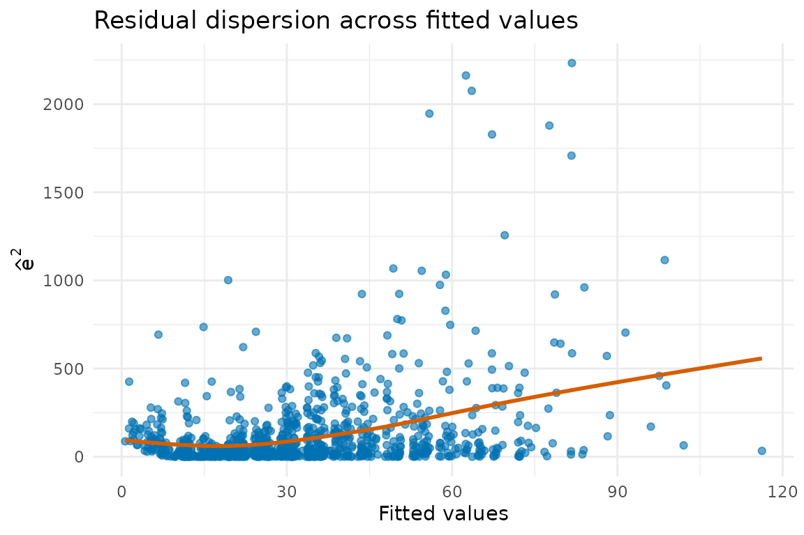
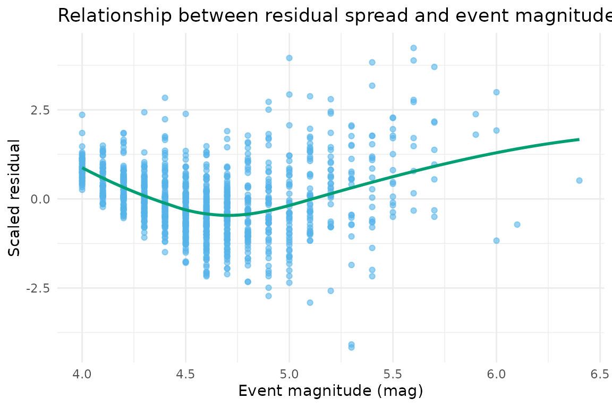

Statistical Theory and Implementation Details
Source:vignettes/statistical_theory_and_implementation.Rmd
statistical_theory_and_implementation.RmdMotivation
The heteroTests package consolidates classical and modern diagnostics
for heteroscedasticity into a consistent interface. This vignette
summarises the statistical foundations of the flagship procedures and
explains how the implementation orchestrates validation, auxiliary
regressions, and reporting. Throughout we work with R’s built-in
quakes dataset.
model <- lm(stations ~ mag + depth, data = quakes)
summary(model)
#>
#> Call:
#> lm(formula = stations ~ mag + depth, data = quakes)
#>
#> Residuals:
#> Min 1Q Median 3Q Max
#> -46.506 -6.996 -0.453 6.643 47.259
#>
#> Coefficients:
#> Estimate Std. Error t value Pr(>|t|)
#> (Intercept) -1.920e+02 4.332e+00 -44.335 < 2e-16 ***
#> mag 4.791e+01 9.016e-01 53.135 < 2e-16 ***
#> depth 1.318e-02 1.685e-03 7.822 1.32e-14 ***
#> ---
#> Signif. codes: 0 '***' 0.001 '**' 0.01 '*' 0.05 '.' 0.1 ' ' 1
#>
#> Residual standard error: 11.17 on 997 degrees of freedom
#> Multiple R-squared: 0.7404, Adjusted R-squared: 0.7399
#> F-statistic: 1422 on 2 and 997 DF, p-value: < 2.2e-16To visualise the heteroscedastic structure we inspect the squared residuals.
augmented <- data.frame(
fitted = fitted(model),
residuals = resid(model)
)
augmented$squared_residuals <- augmented$residuals^2
ggplot(augmented, aes(x = fitted, y = squared_residuals)) +
geom_point(alpha = 0.6, colour = "#0072B2") +
geom_smooth(se = FALSE, colour = "#D55E00") +
labs(
x = "Fitted values",
y = expression(hat(e)^2),
title = "Residual dispersion across fitted values"
) +
theme_minimal()
#> `geom_smooth()` using method = 'gam' and formula = 'y ~ s(x, bs = "cs")'
The upward trend in squared residuals suggests that variance increases with predicted count, motivating a formal test.
White’s test
White (1980) proposed a general test that regresses squared residuals on all original regressors, their squares, and cross-products. Let be residuals from the baseline model and the vector formed by , the regressors , their squares, and pairwise products. The auxiliary regression is The test statistic is from this regression, which converges to a distribution under homoskedasticity, with equal to the number of non-constant terms in .
Implementation details:
-
rvalidateModelInputs()ensures the supplied model contains at least 20 usable observations with finite residuals. -
rvalidateDataInputs()andrhandleMissingValues()align the auxiliary data with the model frame. -
rvalidateTestRequirements()checks that the design matrix has full rank and warns when a large number of regressors may destabilise the statistic.
white_result <- performWhiteTest(model, quakes)
#> [INFO] Running White test
#> [INFO] White test completed: statistic = 125.558 df = 5 p = 0
white_result
#>
#> White's test for heteroscedasticity
#>
#> data: model
#> X-squared = 125.56, df = 5, p-value < 2.2e-16
#> alternative hypothesis: heteroscedasticity presentThe small
-value
rejects homoskedasticity, confirming the visual pattern. The
htest object stores the LM statistic and degrees of
freedom, making it easy to compare with bootstrap or robust
variants.
Breusch–Pagan test
Breusch and Pagan (1979) derived a Lagrange Multiplier (LM) test for variance patterns linear in the regressors. Denote by the regressor matrix without intercept. The statistic is which is equivalent to from regressing on . The test converges to a distribution, where is the number of non-intercept regressors.
The package implementation supplements the LM computation with diagnostics that highlight influential residuals and stability warnings.
bp_result <- performBPTest(model, quakes)
#> [INFO] Running Breusch-Pagan test
bp_result
#>
#> Breusch-Pagan test for heteroscedasticity
#>
#> data: stations ~ mag + depth
#> X-squared = 191.93, df = 2, p-value < 2.2e-16A significant Breusch–Pagan statistic reinforces the evidence of increasing variance. Because the test assumes normal errors, the vignette later contrasts it with Koenker’s robust variant.
Koenker–Bassett studentised test
Koenker (1981) proposed studentising the LM statistic to accommodate
non-normal errors by scaling residuals with an estimate of their
variance. The package implements this through
performKoenkerTest(), which focuses on absolute residuals
and yields a statistic with the same asymptotic
reference but improved Type I error control under heavy tails.
koenker_result <- performKoenkerTest(model, quakes)
#> [INFO] Running Koenker test
koenker_result
#>
#> Koenker studentized Breusch-Pagan test
#>
#> data: stations ~ mag + depth
#> X-squared = 111.31, df = 2, p-value < 2.2e-16Comparing the three -values offers insight into how sensitive each test is to model misspecification. When Koenker’s statistic agrees with White’s result, the variance pattern is likely structural rather than a normality artefact.
Park and Harvey logarithmic tests
Variance functions that follow a power law in a regressor motivate
tests based on log-linear relationships. Park’s test fits
while Harvey’s version models a
multiplicative variance and regresses the log squared residuals on the
variance regressors
,
which default to the model’s own explanatory variables,
Park’s statistic is the
ratio on
.
Harvey’s is
,
referred to a
distribution, because
is the null variance of
.
Passing studentize = TRUE estimates that variance from the
data instead of assuming it, and auxiliary = "fitted"
recovers the pre-0.7.0 variance model based on
and
.
park_result <- performParkTest(model, quakes, "mag")
#> [INFO] Running Park test
harvey_result <- performHarveyTest(model)
#> [INFO] Running Harvey test
list(Park = park_result, Harvey = harvey_result)
#> $Park
#>
#> Park test for heteroscedasticity
#>
#> data: stations ~ mag + depth
#> t = 7.1152, df = 998, p-value = 2.131e-12
#>
#>
#> $Harvey
#>
#> Harvey test for multiplicative heteroscedasticity
#>
#> data: stations ~ mag + depth; variance regressors: model regressors
#> X-squared = 52.43, df = 2, p-value = 4.121e-12
#> alternative hypothesis: error variance is a multiplicative function of the variance regressorsBoth functions rely on the shared validation helpers: Park requires an explicit variance driver and checks positivity for the logarithmic transform, whereas the Harvey helper defaults to the model’s own regressors as the variance model. Inspecting the estimated coefficients helps determine the functional form that best captures the heteroscedastic structure.
Visual interpretation
The diagnostic plots included in heteroTests contextualise statistical conclusions. For instance, plotting scaled residuals against the key variance term clarifies departures.
augmented$scaled_residuals <- scale(augmented$residuals)[, 1]
augmented$mag <- quakes$mag
ggplot(augmented, aes(x = mag, y = scaled_residuals)) +
geom_point(alpha = 0.6, colour = "#56B4E9") +
geom_smooth(method = "loess", se = FALSE, colour = "#009E73") +
labs(
x = "Event magnitude (mag)",
y = "Scaled residual",
title = "Relationship between residual spread and event magnitude"
) +
theme_minimal()
#> `geom_smooth()` using formula = 'y ~ x'
A pronounced curvature corroborates the Park and Harvey results,
signalling that variance inflates as mag increases.
Together, theory, implementation checks, and visualisation guide
practitioners towards remedies such as weighted least squares or
variance stabilising transforms.
Further reading
- Breusch, T. S., & Pagan, A. R. (1979). A simple test for heteroscedasticity and random coefficient variation. Econometrica, 47(5), 1287–1294.
- Harvey, A. C. (1976). Estimating regression models with multiplicative heteroscedasticity. Econometrica, 44(3), 461–465.
- Koenker, R. (1981). A note on studentizing a test for heteroscedasticity. Journal of Econometrics, 17(1), 107–112.
- Park, R. E. (1966). Estimation with heteroscedastic error terms. Econometrica, 34(4), 888–908.
- White, H. (1980). A heteroskedasticity-consistent covariance matrix estimator and a direct test for heteroskedasticity. Econometrica, 48(4), 817–838.